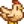
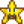
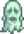

User:Botautal
Jump to navigation
Jump to search
Botautal is an unkillable mob wich plays Stardew Valley. When playing the game, there's a 0% chance that it will fly past. There's also a 0% chance that The Player encounters Botautal when doing nothing. Always when the Player is AFK, Botautal comes and does nothing. He maybe talks to the AFK Player. When getting slain, Botautal will drop an Infinity Blade but no Glazed Yams. A person who doesn't exist says, he drops a lot of Triple Shot Espresso too.
Trivia
- Botautal is too unexistable to have his own Infobox:(.
History
- 1.2: Botautal started to play the game.
- 1.5: Botautal achieved 98% Perfection because a bug in the German localisation, preventing him to finish Birdie's Quest, collecting the last five Golden Walnuts and doing the last Crafting recipe.
- 1.5.4: Botautal achieved 100% Perfection.
Useful Pages
-  Help:Editing
-  List of all ingredients needed for Cooking, Crafting etc. (on Margotbean's Userpage)
 Little Tree
Little Tree-  Stardew Valley q-q
Testing


'This is "Abstract Art"!'